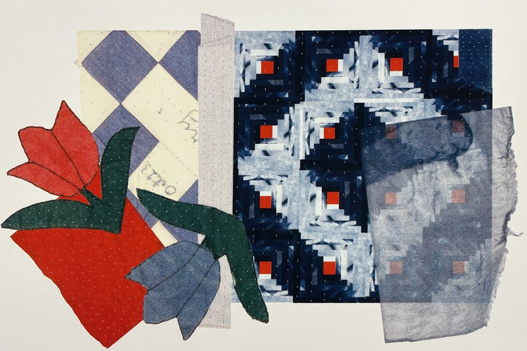

Collaboration in Progress: Normal Editions Workshop at 50
University Galleries of Illinois State University is pleased to present Collaboration in Progress: Normal Editions Workshop at 50 from January 12 through March 25, 2026.
Collaboration in Progress: Normal Editions Workshop at 50 is an exhibition that celebrates the 50th anniversary of Normal Editions Workshop, a non-profit, professional, collaborative print research and publishing workshop within Illinois State University’s Wonsook Kim School of Art. The exhibition features 50 prints created at Normal Editions by visiting artists, emeritus faculty, current faculty, and alumni.
Artists in the exhibition: Avantika Bawa, Harold Boyd, James D. Butler, Rodney Carswell, Carmon Colangelo, Bethany Collins, Amy Cousins, Brittany Denham Whisonant, Jane Dickson, Hector Duarte, Michael Dubina (B.F.A. 1986), Rhea Edge (B.S. 1976, M.S. 1978, M.F.A. 1982), Richard Finch, Julia Fish, Mark Forth (B.S. 1987), Brian Franklin, Raymond E. George, Judy Glantzman, Denise Green, Harold Gregor, Alex Grey, Arturo Herrera, John Himmelfarb, Ken Holder, Mark Innerst, Wonsook Kim (B.S. 1975, M.A. 1976, M.F.A. 1978, Honorary Doctor of Arts 2019), Wayne Kimball, Haerim Lee, Nazafarin Lotfi, Tyler Lotz, Jaime Molina, Dennis Oppenheim, Melissa Oresky, Matthew Day Perez (B.F.A. 2007), Rudy Pozzatti, Richard Rezac, Kenny Scharf, Archana Shekara, Kiki Smith, Laura Splan, Stacey Steers, C. Louis Steinburg, Jaimie Warren, Michael Wille, and David Wojnarowicz.
Normal Editions Workshop was founded in 1976 through James D. Butler’s vision for a contract print research facility that emphasized an educational mission for the students. The Workshop was established by Butler and printmaking faculty members Harold Boyd and Raymond E. George. (A complete history of Normal Editions is available on its website.) Richard D. Finch served as the director for 37 years, and Veda Rives Aukerman served as both the interim director and the director for 11 years. Normal Editions has completed: 163 artist collaborations; 313 editions/projects; three books; 57 traveling exhibitions; and 20 exhibitions sponsored by Normal Editions. Importantly, through their experiences at Normal Editions, students have collaborated directly with artists and master printers, created new works of art, and learned how a professional print facility functions. Many of Normal Editions’ projects with artists were supported in part by the Illinois Arts Council, Alice and Fannie Fell Trust, Harold K. Sage Foundation, Illinois State University Foundation Fund, Wonsook Kim School of Art Visiting Artists Program, and/or University Galleries.
The primary public event for Collaboration in Progress: Normal Editions Workshop at 50 is a panel discussion with key figures from Normal Editions’ history. James D. Butler (founder), Richard D. Finch (former director and master printer), and Veda Rives Aukerman (former director and master printer) will participate in a conversation moderated by Morgan Price (associate professor and acting director & master printer). The panel will take place on Friday, February 13 at 4:00 p.m. and will be followed by a reception.
Another key event is the public creation of a progressive print. During this all-ages workshop, participants will explore the collaborative process of printmaking. Guided by printmaker (and University Galleries’ registrar) Lisa Lofgren, participants will each add a mark to a copper printing plate that will keep changing, mark by mark. Between each addition, the plate will be inked and pressed to create two prints: one for the participant to take and one for temporary display. Stop by on Friday, February 20 anytime between noon to 7:00 p.m. to make a mark. No registration is required. A reception will take place on February 20 from 7:00 to 8:00 p.m. A pop-up exhibition of the progression of prints will be on view on Saturday, February 21 and Sunday, February 22 from noon to 4:00 p.m.
Additionally, University Galleries’ staff is leading art-making workshops for ISU students, K-12 students, and community members. Sensory-friendly times, independent drawing hours, poetry writing prompts, and scavenger hunts are available. Curator-led tours are available by appointment. Field trip reimbursements for tours and workshops are available for K-12 schools and community organizations.
Collaboration in Progress: Normal Editions at 50 is co-organized by Morgan Price (associate professor in the Wonsook Kim School of Art and Normal Editions’ acting director & master printer) and multiple members of the University Galleries’ team: Kendra Paitz (director and chief curator), Lisa Lofgren (registrar), Holly Filsinger (gallery assistant), and Kaili Stanford (student gallery assistant). This exhibition and programming are supported in part by the Illinois Arts Council and the Lori Baum and Aaron Henkelman University Galleries Community Fund.